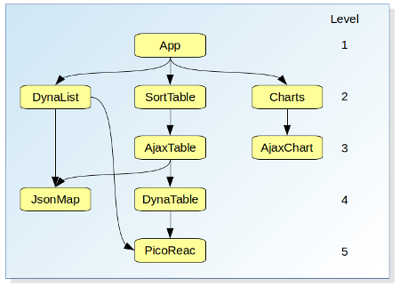

Widgets is a minimalistic dynamic loader for js components (here called widgets).
It avoids you all the constrains of (ES6) import (like CORS, module, etc), providing a clear an concise interface.
Most importantly, it will take care of all dependencies for you, loading them as fast as possible,
but not too fast not to break anything (for a detailed explanation of this, see "Dependencies management" below)
Your widget classname must be the same as the script filename(.js) containing its definition.
The script file must then be placed under a folder of the same name, under your Widgets directory.
Other files pertaining to you widget shall be kept in your widget directory.
window.Widgets holds all widget classes.
Its is mandatory to assign your class to "window.Widgets" under the same name, so that Widgets can instantiate it.
Conversely, any "private" class you'd write shall be declared as usual (not assigned to window.Widgets)
You app is in a tree...
Although Widgets can be used to "just load a couple of components",
it was concieved with the idea that a complex client-side app shall be built as a large dependency tree.
Your app is at the top, as it depends on all its components, which in turn depend on other components all the way down the tree.

Some dependencies can of course be shared amonst different components (so it is therefore not a "rooted tree" striclty speaking).
Fast but not too fast...
Loading such tree of javascript scripts in memory is not so obvious if you want to keep it fast, while avoiding breaking a dependency (not too fast).
Consider for example a component "Foo" defined as:
class Foo extends Bar { ... }
Not only does Foo clearly depend on Bar at runtime, but also for it's very definition.
Therefore, if Bar is defined in another -not yet loaded- file, the browser will throw a ReferenceError: Bar is not defined, just by loading this component's file.
How to load ?
To avoid those errors, and by looking at the example tree on the right, we understand that the tree must be loaded "bottom-up".
Now there are some subtleties in what "bottom-up" exaclty means...
In the picture, components have been conveniently placed so they are "as high as possible on the graph (lowest level number)", while no arrow ever goes upwards.
Consider for example the component "JsonMap":
"DynaList" (level 2) depends on it, so you'd expect to see it on level 3, but as "AjaxTable" (level 3) depends on it too, it can't be placed higher that level 4.
Assigning levels this way, and making sure there are no duplicates in the tree (tree shaking), we'll be able to load components in a safe way by loading the highest level-number first (bottom-most on the graph),
down to level 1 (top of the graph).
Sync o Async ?
You could of course do this in a synchronous way, waiting for each component to be loaded before loading the next one in line.
This is a bit like you're used to do when stacking all your <script> tags in the html: you make sure to place them in the proper order, and expect the browser to comply with that.
However, when looking at the tree again, we notice that -by definition- there can never be any dependency horizontaly (in the same level).
So, while levels shall be strictly loaded bottom-up and synchronously to avoid errors, conversely all components on the same level can be loaded asynchronously and in parallel (at browser discretion).
Widgets to the rescue
Thanks for reading up to here, you can now forget it all ;-) because Widgets implements all these gory details for you.
Based on the file "WidgetDependencies.json", it will build the needed tree for what you are asking, shake it, and load it bottom-up mixing sync and async as needed.
Just give your callback and it will be executed as soon as everything your requested is ready.